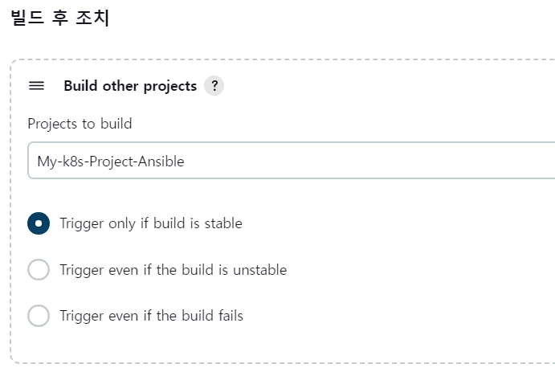
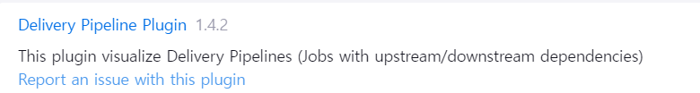
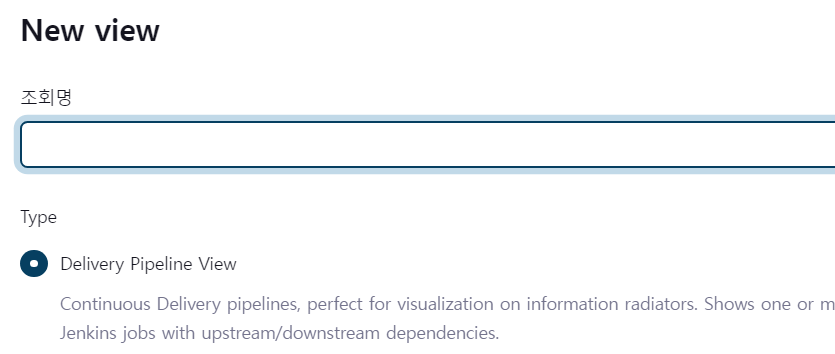
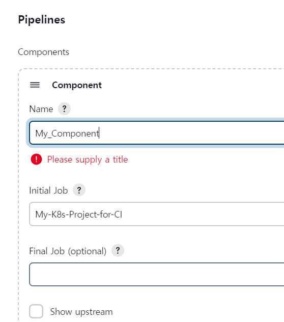
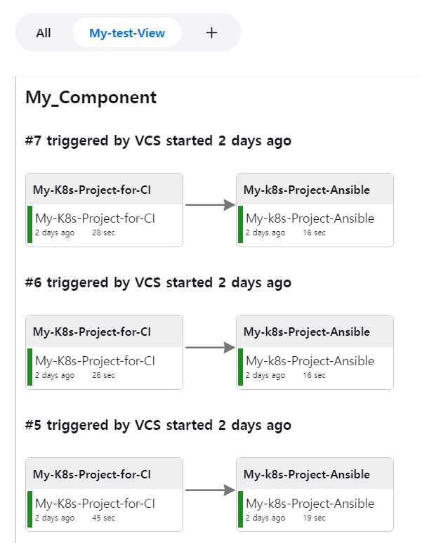
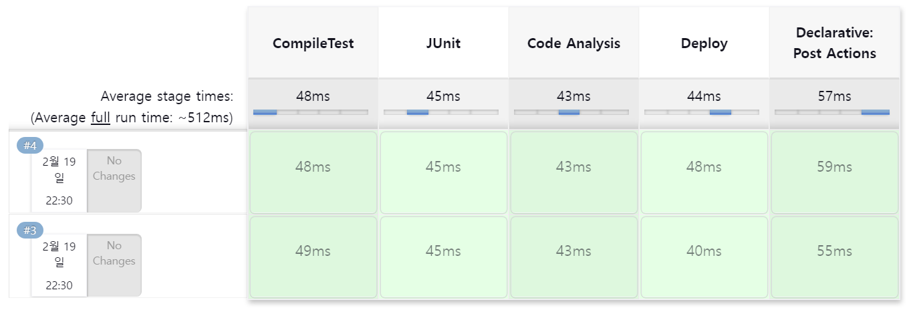
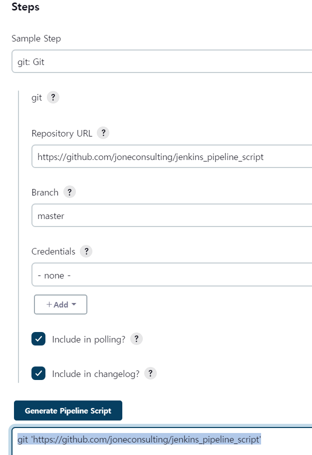
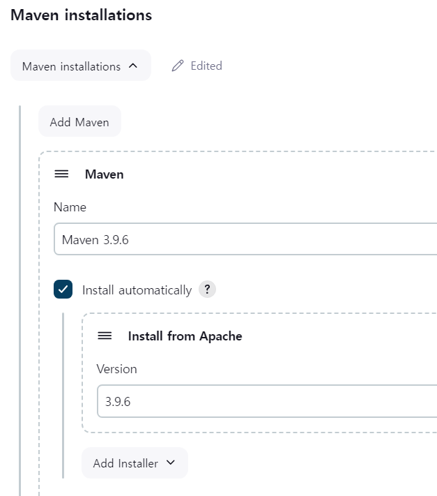

ci-cd-section-04-ch-05-advancedJenkins
Advanced Jenkins 목표
파이프라인 사용
정적 소스 코드 분석과 복잡도를 리포트해주는 소나큐브 연동
Jenkins를 사용하여 마스터 노드와 슬레이브로 노드로 구성하기
파이프라인 사용 방법
아이템 마다 빌드 후 결과에 따라 동작할 아이템을 등록한다.

- Trigger only if build is stable (빌드가 안정적인 경우에만 트리거)
예시 결과 코드: SUCCESS
설명: 이 옵션을 선택하면, 빌드가 안정적인 상태일 때만 빌드 후 조치가 실행됩니다. 예를 들어, 빌드가 성공적으로 완료된 경우에만 조치가 실행됩니다.- Trigger even if the build is unstable (빌드가 불안정한 경우에도 트리거)
예시 결과 코드: UNSTABLE
설명: 이 옵션을 선택하면, 빌드가 실패하거나 불안정한 상태일 때에도 빌드 후 조치가 실행됩니다. 즉, 빌드가 성공하지 않아도 조치가 실행됩니다.- Trigger even if the build fails (빌드가 실패해도 트리거)
예시 결과 코드: FAILURE
설명: 이 옵션을 선택하면, 빌드가 실패한 경우에도 빌드 후 조치가 실행됩니다.
플러그인 매니저에서 Delivery Pipeline을 사용한다.

1.플러그인을 설치한다.

2.New view를 선택하고, Type을 지정합니다.

3.실행할 컴포넌트를 지정합니다

4.작성된 빌드후 조치를 View를 통해서 확인할 수 있습니다.
정리
회사 내에서 각 팀이 자체적으로 사용하는 빌드 시스템을 설정할 수 있지만, 공통적으로 사용되는 빌드 시스템을 구축하여 여러 팀과 어플리케이션이 함께 빌드하고 배포 파이프라인을 각자 구축할 수 있습니다.
이러한 방식을 통해 현재 대기 중인 프로젝트와 진행 중인 프로젝트를 시각화하여 확인할 수 있습니다. 기존에 구현된 항목들을 간단하게 연결하여 파이프라인을 구축하는 방식입니다
스크립트 사용
기존 방식은 아이템이라는 프로젝트 타입에 빌드하려는 소스코드를 git을 통해서 가져오고, 빌드하는 방식을 선택하고, 빌드 결과물을 배포하고자 하는 서버를 환경 정보에서 가져와서 구성했습니다.
이제는 파이프라인 이라는 프로젝트를 이용해서 동적으로 원하는 형태로 스크립트를 만들어서 사용할 수 있습니다.
Declaratice
Scripted(Groovy + DSL)
파이프라인 프로젝트는 크게 두가지 형태로 작성할 수 있습니다.
- agent
Jenkins서버를 기동할 때 마스터 서버와 슬레이브 서버로 구성할 수 있습니다.
멀티노드로 구성할수 있는 어떤 서버에 Jenkins를 실행할지 지정할 수 있습니다.- stage
구성하고자 하는 각각의 단계를 넣을 수 있습니다.
예제 작성하기

빌드가 종료가 되면 위 그림처럼 각 stage마다 Log및 소요시간을 확인 할 수 있습니다. post라는 항목은 빌드가 성공하거나 실패되었을 때 어쨋든 빌드가 완료가 되었을 때 어떤 작업을 수행할 것인지 지정할 수 있습니다.
- always
이 블록은 파이프라인 실행 후 항상 실행됩니다. 즉, 파이프라인이 성공 또는 실패하더라도 항상 실행됩니다.
- success
이 블록은 파이프라인 실행이 성공했을 때 실행됩니다. 파이프라인이 성공적으로 완료되었을 때만 실행됩니다.
- failure
이 블록은 파이프라인 실행이 실패했을 때 실행됩니다. 파이프라인 실행이 실패했을 때만 실행됩니다.
- unstable
이 블록은 파이프라인 실행이 불안정한(unstable) 상태로 표시됐을 때 실행됩니다. 불안정한 상태는 성공도 실패도 아닌 경우를 말합니다.
- changed
이 블록은 파이프라인의 상태가 변경되었을 때 실행됩니다. 이전 실행과 비교하여 파이프라인의 상태가 변경되었을 때만 실행됩니다.
예제1
- *.sh와 *.bat 파일
젠킨스가 동작하는 운영체제 환경이 Linux라면 .sh 파일을 실행하게 작성하고,
윈도우 환경이라면 .bat 파일을 실행하도록 합니다.
도커는 리눅스 환경이기 때문에 sh 파일을 실행하면됩니다.
목표
Jenkins 서버 안에 직접 스크립트를 작성해서 실행할 수 있지만, 명령어를 통해 별도의 스프립트 파일에 의해서 구성해 놓고 있는 해당하는 스크립트 파일을 순차적으로 호출해서 실행하는 방법을 사용하는게 목표입니다.
파이프라인 문법은 Pipeline Syntax 기능을 통해서 필요한 기능을 파이프라인 문법으로 변환해줍니다.
스테이지 항목에 불러온 Git 레파지토리 파일을 어떻게 실행하는지 확인할 수 있습니다.
사용법

Pipeline Syntax를 선택한 화면입니다.
현재 자동으로 구문을 만들어주는건 Steps에 들어가는 항목을 작성하는 방법입니다.
만약 Git 리포지토리가 private일 경우 ssh나 그 외 방식을 통해서 Credentials를 추가해야합니다.
sh 커맨드를 이용해서 다운받은 깃 폴더에 포함된 스크립트 파일을 실행할 수 있습니다.
작업하고자하는 커맨드 sh, bat 파일을 통해서 실행할 수 있습니다.
이전 예제처럼 post을 추가하여 파이프라인이 종료되는 상황에 따라 추가 항목을 진행할 수 있습니다.
예제2
메이븐 빌드를 젠킨슨 파이프라인에 추가하는 예제입니다.
파이프라인 tools에 작성할때 버전은 메이븐이라면 Configure tools에 들어가서 설정할 수 있습니다.

예제3
예제 2번의 결과를 톰켓 서버에 배포하는 스크립트를 작성합니다.
컴퓨터 포멧으로 이후에 재 작성